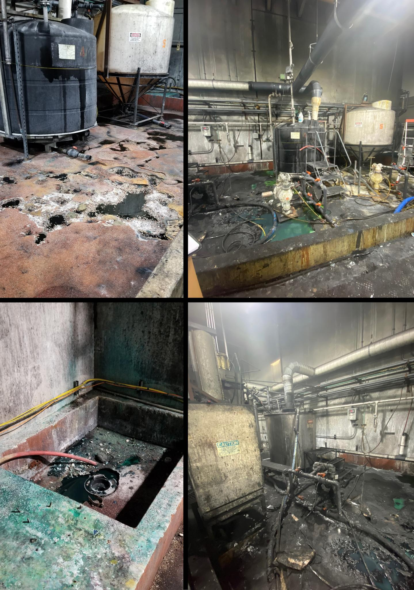
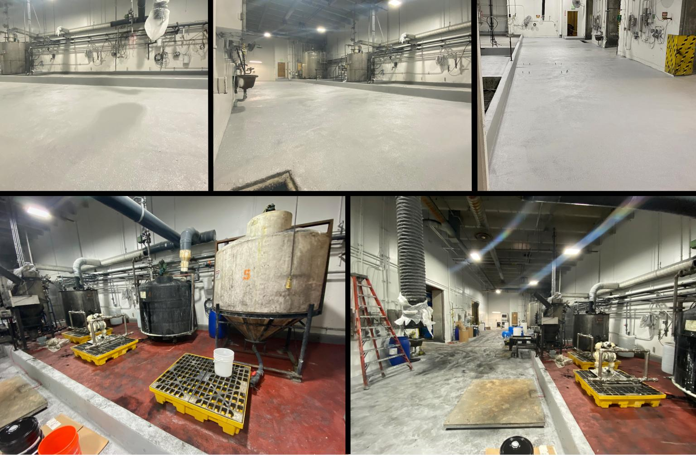

Some floor failures are cosmetic. This one was catastrophic. Concentrated sulfuric acid at 50% and nitric acid at 67% had been eating through this facility's flooring for years. The concrete substrate was exposed, corroded, and crumbling. Chemical containment areas were compromised. The floor wasn't just failing — it was a safety and environmental hazard.
The Damage
The photos tell the story. Black, green, and rust-colored corrosion covered every surface. Acid had eaten through previous coatings, through the concrete, and in some areas was threatening the structural integrity of the slab itself. Chemical storage tanks sat on floors that could no longer contain spills. This required a complete rebuild.
The Solution: SL + SaniEster
Standard epoxy coatings can't handle this kind of chemical exposure. Even most cementitious urethanes have limits when it comes to concentrated mineral acids at these percentages. This project called for the heavy artillery.
We installed SaniCrete SL — 3/8" cementitious urethane — as the base system for its mechanical properties, impact resistance, and thermal shock performance. Then we topped it with SaniEster vinyl ester topcoat — specifically formulated for extreme chemical resistance against concentrated acids, caustics, and solvents.
The combination delivers the best of both worlds: the durability and impact resistance of cementitious urethane with the chemical resistance of vinyl ester.
The Result
A seamless, chemical-resistant floor that handles continuous exposure to concentrated sulfuric and nitric acid while supporting heavy forklift traffic. The facility went from a corroded hazard to a clean, protected environment — ready to handle whatever chemistry gets thrown at it.
Products Used
- SaniCrete SL — 3/8" self-leveling cementitious urethane base
- SaniEster — Vinyl ester topcoat for extreme chemical resistance